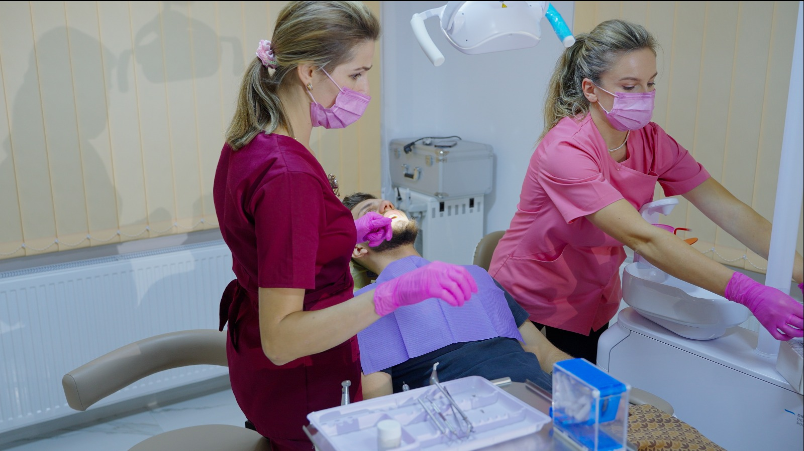

Chirurgie dentară în Comarnic
Chirurgia dentară include intervenții orale pentru extracții, măsele de minte și alte proceduri chirurgicale. La HopeDent, toate intervențiile sunt realizate cu echipamente moderne, sub anestezie adecvată și cu accent pe siguranța și confortul pacientului.
Fiecare intervenție este planificată cu atenție la aspectele de siguranță și confort ale pacientului.
Chirurgia dentară include extracții simple și complicate, măsele de minte, intervenții pentru implanturi și alte proceduri orale. Este specialitatea care asigură rezolvarea problemelor dentare care necesită intervenții chirurgicale, cu recuperare rapidă și minimă disconfort.
La HopeDent, fiecare intervenție chirurgicală este pregătită cu atenție, folosind anestezie locală sau sedare, și cu explicații clare despre procedură și îngrijire post-operatorie. Pacientul este informat despre fiecare pas și primește recomandări pentru recuperare.

Servicii de chirurgie dentară
În cadrul consultațiilor de chirurgie orală, medicul evaluează necesitatea intervenției și planifică procedura cu atenție la siguranță și confortul pacientului.
Extracții dentare
Îndepărtarea dinților deteriorați sau care nu pot fi salvați.
Măsele de minte
Extracția măselelor de minte incluse sau semiincluse.
Chirurgie pentru implanturi
Intervenții pentru inserarea implanturilor dentare.
Chisturi și tumori
Îndepărtarea formațiunilor patologice din cavitatea orală.
Rezecții apicale
Tratamentul infecțiilor la apexul rădăcinii dentare.
Îngrijire post-operatorie
Recomandări pentru recuperare rapidă și fără complicații.
Când sunt necesare intervențiile chirurgicale?
Chirurgia dentară este indicată atunci când alte tratamente conservatoare nu sunt suficiente pentru rezolvarea problemelor dentare.
Procesul chirurgical
La HopeDent, intervențiile chirurgicale sunt realizate cu echipamente moderne, în condiții de sterilizare și cu monitorizare atentă a pacientului.
Evaluare
Examinarea și planificarea intervenției cu radiografii și analize.
Pregătire
Anestezia locală sau sedare pentru confortul pacientului.
Intervenție
Procedura chirurgicală realizată cu precizie și siguranță.
Recuperare
Îngrijire post-operatorie și recomandări pentru vindecare.
Când este nevoie de alte tratamente?
În unele cazuri, chirurgia dentară poate fi urmată de protetică, implantologie sau ortodonție pentru restaurarea completă a funcționalității orale.
Întrebări frecvente
Este dureroasă extracția dentară?
Sub anestezie locală, procedura nu este dureroasă, iar disconfortul post-operator este gestionabil cu medicație.
Cât timp durează recuperarea?
Recuperarea variază, dar majoritatea pacienților se simt bine în câteva zile.
Sunt riscuri în intervențiile chirurgicale?
Riscurile sunt minime cu planificare atentă, dar medicul discută toate aspectele.
Când trebuie extrasă măseaua de minte?
Când provoacă durere, infecții sau împiedică alinierea dinților.